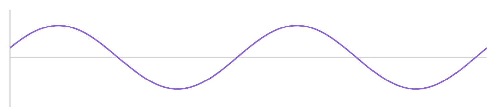
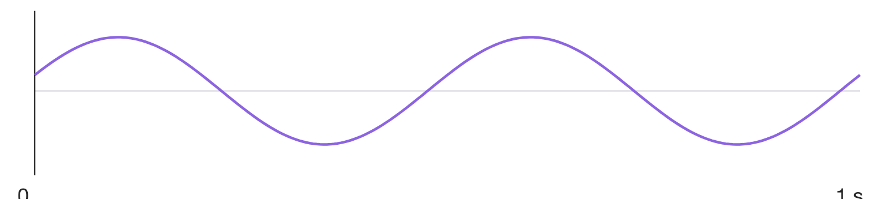

同一段6秒音乐，两个文件均未做音频压缩。
A：529,244B；B：96,044B。
先试听，再猜测：为什么大小不同？
同一段6秒音乐，两个文件均未做音频压缩。
A：529,244B；B：96,044B。
先试听，再猜测：为什么大小不同？
同样长、都未压缩，数据量仍可不同。
先找出音频记录了哪些数据。
最后再用实际参数核对你的猜测。
看同一位置随时间变化的声音。
波形的横轴、纵轴分别表示什么？

看同一位置随时间变化的声音。
波形的横轴、纵轴分别表示什么？
声压变化 → 麦克风 → 连续电信号。
横轴：时间；纵轴：信号幅度。
曲线表示信号随时间的变化。
这一秒的曲线怎样记录？
在纸上圈出你准备读取的时刻。

这一秒的曲线怎样记录？
在纸上圈出你准备读取的时刻。
按等时间间隔读取信号幅度。
留下离散时刻的样本：采样。
采样先决定“什么时候读”。
单声道：每秒等间隔读取8000个样本。
采样率是多少？相邻时刻间隔多久？
单声道：每秒等间隔读取8000个样本。
采样率是多少？相邻时刻间隔多久？
采样率：8000 Hz = 8 kHz。
间隔：1÷8000 s = 0.125 ms。
采样率表示每秒每声道的样本数。
四个样本：−0.62、−0.10、0.38、0.84。
只能用：−0.75、−0.25、0.25、0.75近似。
分别选哪个？
四个样本：−0.62、−0.10、0.38、0.84。
只能用：−0.75、−0.25、0.25、0.75近似。
分别选哪个？
近似值：−0.75、−0.25、0.25、0.75。
把样本映射到有限等级：量化。
量化决定“幅度分多细”。
从低到高编号0、1、2、3；采用等长二进制码。
每个样本至少几bit？写出四个码字。
从低到高编号0、1、2、3；采用等长二进制码。
每个样本至少几bit？写出四个码字。
2 bit：00、01、10、11。
等级编号0、1、2、3，依次写成码字。
按约定表示量化结果：编码。
单声道：00 01 10 11；同一张四等级码表。
共4个样本，能确定这段声音的时长吗？
单声道：00 01 10 11；同一张四等级码表。
共4个样本，能确定这段声音的时长吗？
4 Hz：4个样本占1秒。
8 Hz：4个样本占0.5秒。
此题已有码表和单声道条件，还缺采样率。
同一段6秒音乐，单声道、16bit。
比较8kHz与44.1kHz，其他条件不变。
再看：8kHz能保留6kHz纯音吗？
同一段6秒音乐，单声道、16bit。
比较8kHz与44.1kHz，其他条件不变。
再看：8kHz能保留6kHz纯音吗？
采样率提高，可保留的频率范围扩大。
带限信号：采样率须高于最高频率的2倍。
8kHz不能保留6kHz纯音。
正常降采样先低通，播放时长仍为6秒。
一段信号只含8kHz以下的频率。
32kHz已满足条件，改成96kHz一定更好听吗？
一段信号只含8kHz以下的频率。
32kHz已满足条件，改成96kHz一定更好听吗？
更高采样率增加样本数和存储量。
已经足够时，不保证可闻改善。
录音来源、设备和处理也影响听感。
同一批样本，幅度范围固定。
2bit与4bit量化，哪一种近似更细？
同一批样本，幅度范围固定。
2bit与4bit量化，哪一种近似更细？
2 bit：4级；4 bit：16级。
等级更密，量化步长更小。
同一范围内，量化误差上界减小。
核对−0.10样本：2bit误差0.15；4bit误差0.0375。
2bit、4bit、8bit各有多少个码字？
16bit最多能区分多少个等级？
2bit、4bit、8bit各有多少个码字？
16bit最多能区分多少个等级？
2² = 4；2⁴ = 16；2⁸ = 256。
2¹⁶ = 65,536。
n bit最多表示2ⁿ个等级。
采样、量化、编码，分别回答哪一个问题？
什么时候读？幅度分多细？怎样写码字？
采样、量化、编码，分别回答哪一个问题？
什么时候读？幅度分多细？怎样写码字？
连续电信号 → 采样 → 量化 → 编码 → 数字样本。
采样：选时刻；量化：近似幅度；编码：写码字。
本课对已有数字音频的重新处理，是计算模拟。
同采样率、同位数、同样6秒。
单声道1路，双声道2路；样本数据量怎样变？
同采样率、同位数、同样6秒。
单声道1路，双声道2路；样本数据量怎样变？
每个时刻，单声道记录1个样本。
双声道记录左、右各1个样本。
同参数同长度：双声道样本数据量为2倍。
要让别人读懂并播放这些样本，
文件除了样本，还需要记录什么？
要让别人读懂并播放这些样本，
文件除了样本，还需要记录什么？
格式参数：采样率、位数、声道等。
样本数据：按约定排列的PCM数值。
本课WAV以未压缩整数PCM保存样本。
未压缩不等于没有采样／量化误差。
每秒每声道fs个样本，录音t秒。
每样本n bit，共C个声道。
先数样本，再换算成B。
每秒每声道fs个样本，录音t秒。
每样本n bit，共C个声道。
先数样本，再换算成B。
样本总数 = fs × t × C。
样本数据量（B）= fs × t × n × C ÷ 8。
采样率用Hz；时长用秒；n为实际存储位数。
44.1kHz、16bit、双声道，录音1分钟。
求样本数据量（B）；换算MiB列式即可。
1 MiB = 1,048,576 B。
44.1kHz、16bit、双声道，录音1分钟。
求样本数据量（B）；换算MiB列式即可。
1 MiB = 1,048,576 B。
44,100 × 60 × 16 × 2 ÷ 8 = 10,584,000 B。
10,584,000 ÷ 1,048,576 ≈ 10.09 MiB。
同参数改单声道，样本数据量减半。
实际样例：8kHz、2秒、16bit、单声道PCM WAV。
公式得到32,000B。完整文件会一样大吗？
实际样例：8kHz、2秒、16bit、单声道PCM WAV。
公式得到32,000B。完整文件会一样大吗？
读取样本：16,000个；样本数据32,000B。
本课文件：32,044B，另有44B结构信息。
公式计算样本数据量，不是完整文件大小。
带限信号最高频率6kHz；记录2秒。
16bit、单声道；上限64KiB = 65,536B（仅样本数据）。
候选采样率：8k、16k、24kHz。逐项检查两个条件。
带限信号最高频率6kHz；记录2秒。
16bit、单声道；上限64KiB = 65,536B（仅样本数据）。
候选采样率：8k、16k、24kHz。逐项检查两个条件。
8kHz：32,000B，容量够；频率条件不满足。
16kHz：64,000B，两项满足。
24kHz：96,000B，超出65,536B。
① 8kHz采样，声音自身频率就是8kHz。
② 16bit量化只有16个等级。
③ 所有WAV都未压缩，公式算出完整文件大小。
① 8kHz采样，声音自身频率就是8kHz。
② 16bit量化只有16个等级。
③ 所有WAV都未压缩，公式算出完整文件大小。
① 采样率数记录次数；声音频率数振动次数。
② 16bit最多表示65,536个等级。
③ WAV不一定未压缩；公式只计样本数据。
22.05kHz、16bit、单声道10秒，样本数据量是多少B？
4bit变成8bit，等级数变成几倍？
8kHz录音转48kHz，能恢复未记录的6kHz吗？